Allie Freund
Thesis Title
While architecture’s spatial expertise is typically used to rigidly define and segregate the uses and experiences of spaces, it is also possible that architecture could develop new techniques that would allow it to become an instigator and an interrupter of usual.
We can look to the act and necessity of play as an interruption to the current state of mind, freeing the individual and providing new realities. Understanding playing as a state of openness, pliable and reflective of peoples needs, the spaces of this thesis will demonstrate new architectural techniques that will allow for the creation and overlap of spaces that can inspire or initiate these states of mind, detaching the user from the everyday and liberating their desires and impulses. The architecture will monumentalize these actions and remain empathetic to a ludic environment that can reimagine how one considers, responds, and experiences a space.
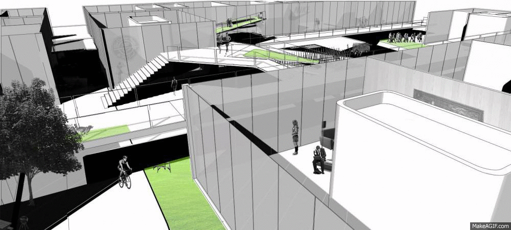
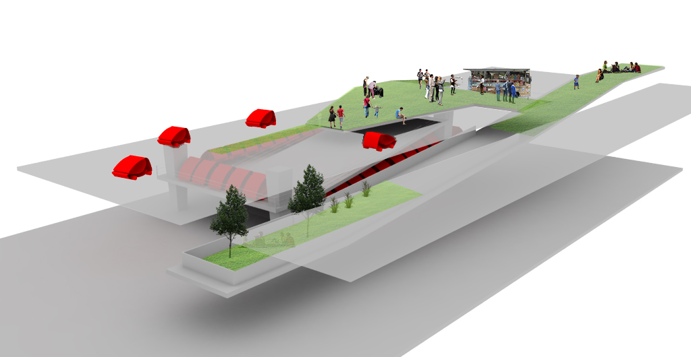
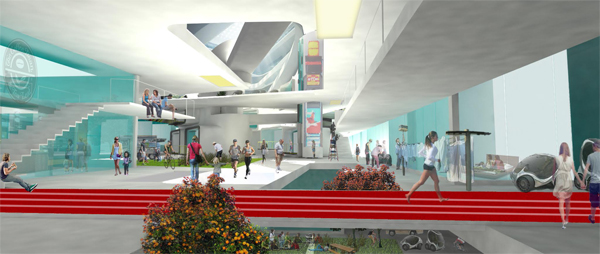
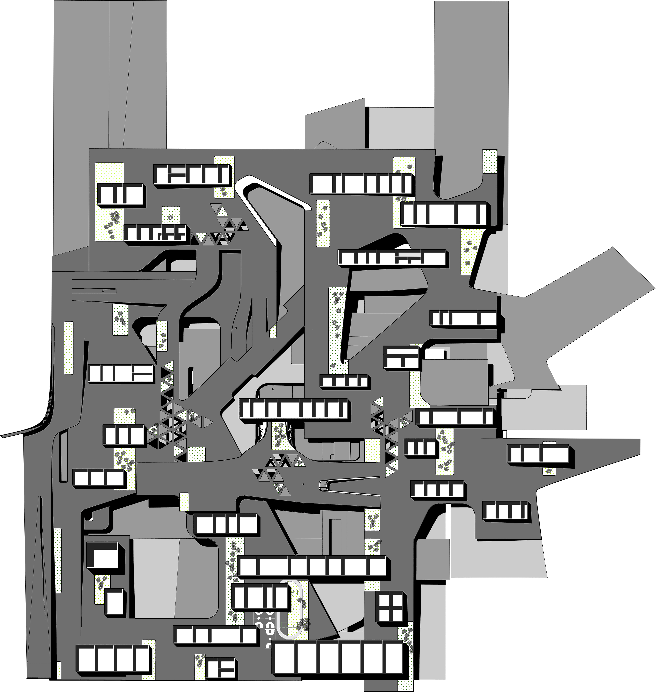
Bao Pham
Excessive City
Excessive City is a critique of the modernist paradigm that has shaped our cities for the last century. The project calls for a rejection of rigid zoning conditions, and planning practices, which have segregated activities and uses into discrete areas connected by an unprogrammed circulation network, in favor of a new city typology that embraces the hyper-intensified spatial conditions of the pre-modern city, where the street is just not relegated to circulation but a spatial arena that is both a social condenser and instigator, by virtue of the heterogeneity of program that it faces.
Excessive City is a new prototype urban fabric that replaces the notion of the street as an unprogrammed circulation network, incompatible with pedestrian experience and socialization, with a new condition in which program spaces and spaces of movement are combines into an unified urban landscape wherein unplanned activities and social encounter are catalyzed.
Situated near downtown Detroit, the proposal is adjacent to Highway 10 and Highway 85; redeveloping 3 sq. blocks of derelict and unused lots. The 3 sq. blocks is an initial proposal to conglomerate the surrounding neighborhoods, combating existing urban sprawl conditions. The eventual goal of the proposal will be to expand to accommodate all of Detroit's population, freeing left over space from the old city infrastructure to be re-appropriated as urban farms.
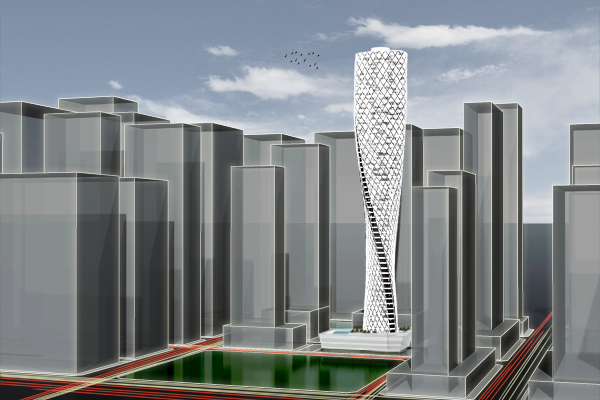
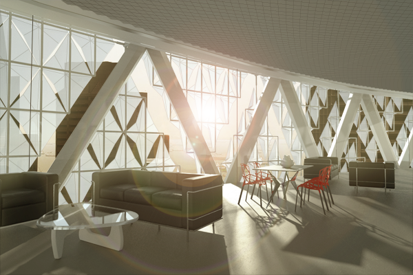
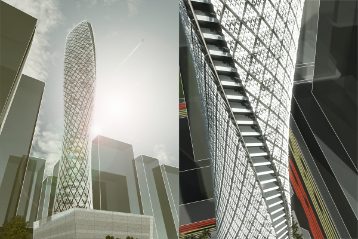
Lawrence Yun
Thesis Title
Our digital network provides us with an experience that transcends space and matter. It connects us with people near and far, and augments our social interactions with images and updates. It offers us choice and authority by allowing us to customize our digital space in ways that are easy and gratifying. It would be desirable if architecture produced effects that were complimentary to our digital experience. Architecture is currently bound experientially to one place. It is mostly static and does not beg to be engaged. It lacks the ability to provide feedback and authorship. Through design, the engaging qualities of the digital network can be integrated into architecture to provide a more interactive architectural experience. By producing spatial effects specific to the users (occupant) preferences and social network, architecture can provide a greater connected living experience. These effects should be in response to both local and remote stimuli. Elements like view, lighting and visual cues can be manipulated to create these spatial effects, but first they must be designed to be variable.
The project proposed here is a residential tower in Singapore that is designed with this new interactive architecture. It features a dynamic facade system that regulates daylight and view. Additionally, each unit has a pixilated lighting system that augments spacial occupancy and atmospheric qualities. These systems both allow the user and their network to affect the spatial experience. The configuration of the tower maximizes the variable qualities of the spaces. With only three to four units per floor, residents are able have a wider viewing potential. And by using a diagrid tube structural system, the plans are column-free and maximize the clarity of the space.
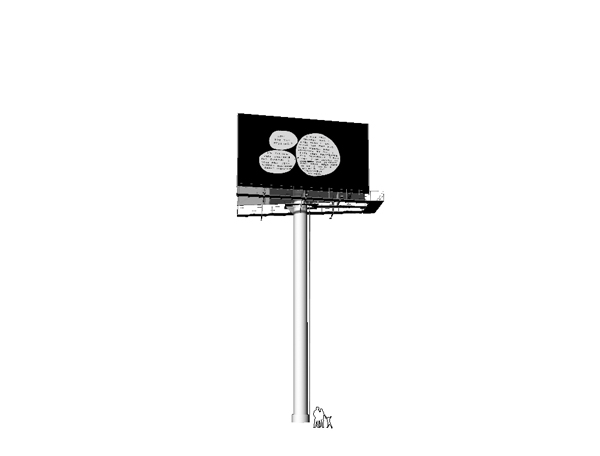
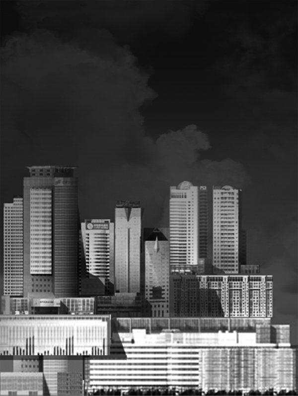
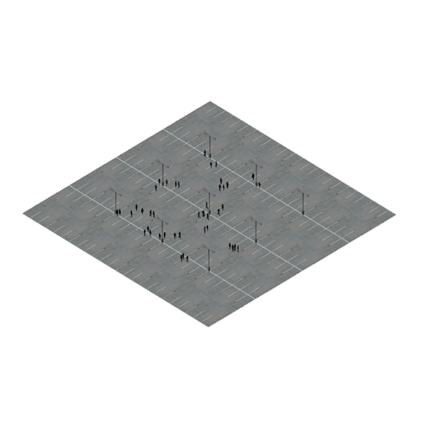
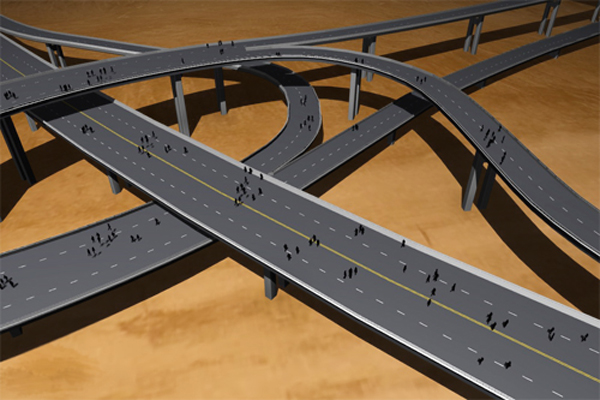
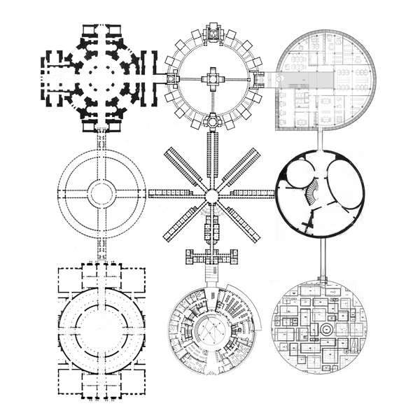
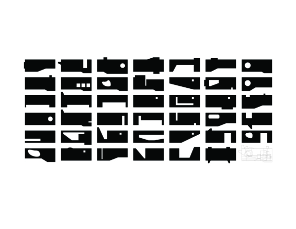
Clara Lee
Thesis Title
Take the prototypical spaces of everyday life,
the office
the supermarket
the motel
the library
the garden
the park
and introduce them to the car, introduce them to the city.
Supermarkets become cafes become galleries become parks become stores.
Whereas the museum is typically dedicated to the experience of culture, there has never been a museum, where space -- as a culture -- has been displayed.
What does this entail?
A museum of spaces where our lives are played out:
These spaces are not monumental,
not tall nor stoic,
but they are in rooms of small proportions and mundane spaces.
The Museum of Spaces is a spatial bricolage, bringing together a set of spaces, which are 1. programmatically meant to be temporarily inhabited, and 2. are spatially specific and unique.
The Museum of Spaces is a new species of museum, one that encourages inhabitation, along with the densification of disparate contexts. This overlay and densification results in architectural conditions that absorb and mix new functions.
More importantly, this collision of spaces allows for the mixing and absorption of programs and peoples that would otherwise never happen. These collisions create potentials for casual encounters, missed connections, and event moments -- social activations that are specific to the city, now condensed within the Museum of Spaces.
Natalie Chuh
Thesis Title
Contemporary cultures relationship to information differs significantly from that of a few decades ago. The emergence of a new information-dependent culture has created a society that now places a higher value on knowledge. Within this new knowledge culture, the exchange of information is developing into a more public and social activity. The traditional top-down, authoritative methods of information sharing (i.e. newspapers, broadcast television) are now supplemented with new bottom-up, amateur methods (i.e. Wikipedia, Facebook, blogs). Peer-to-peer information exchange is increasingly more prevalent in todays society, thereby creating a network connecting people based on proximity and social interest groups. This network encourages participation and cultivates social interaction through the sharing of information between individuals and groups. The information exchange seeps into daily activities, making it integral to our everyday lives. The social-ness of the network creates an enjoyable environment for the exchange and discovery of information.
This peer-to-peer information exchange is created effortlessly through the development of new user-friendly software, easily accessible networks of communication, and portable digital devices. With technology, users act as both consumers and producers of information. But these exchanges are most fully expressed and experienced only in the virtual realm. Especially now, as our culture holds knowledge as a prominent source of wealth, it is increasingly beneficial to create physical spaces that support the new informational, social exchange that contemporary culture desires. Current spaces devoted to information, such as libraries, do not sufficiently address the new knowledge culture, nor support new technology and media. For the successful expression of society's new relationship to information, it is necessary to create a physical place that complements the existing structures of virtual information exchange. This thesis demonstrates new techniques in which architecture can create physical spaces for users to produce, consume, and share information in a fun, creative, and social way.
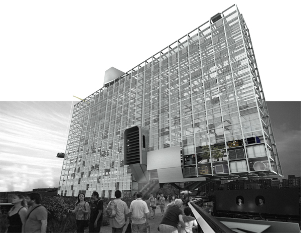
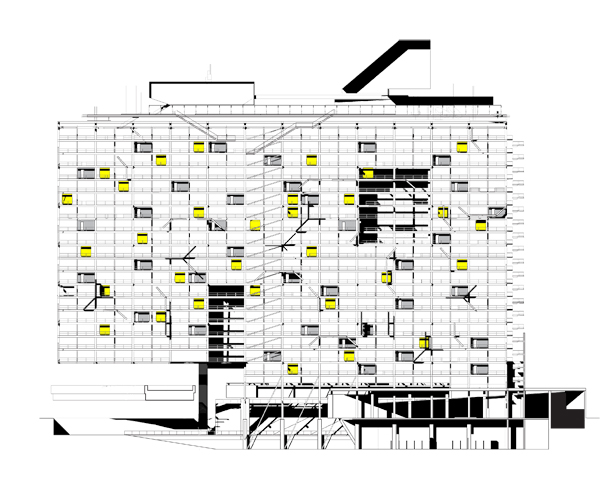
Samuel Clovis
Networked Authorship
The network has provided users with a unique, personal, yet connected world that becomes a collective representation of individual expression and effects. This system offers a connectivity that is comfortable but not challenging, developed through a series of overlaid homogeneous systems. These interactions, although taking on a new precedent within our daily lives, are limited to the confines of virtual space and lack the possibility of acting as public catalysts.
While architecture has long been considered a representation or manifestation of contemporary culture, the emergence of this network culture had created a growing divide between the two. Architecture is removed from this emerging networked context, its stagnancy and specificity contrasting the contemporary notions of individual expression, creation, and influence. In order to create a dialogue between architecture and culture, I propose an architecture that has the potential to become a filter of the data flows of the network, a physical translator of spatial effects. Using overlaid systems with the ability to operate on different prescribed paradigms, architecture could begin to react to different hierarchies of inputs, from environmental conditions and local transformations to information and global issues that disperse contextual relationships. Through a process of networked authorship, a new architectural typology could emerge with the ability to increase an awareness of the present and ground networked reactions into the physical realm.
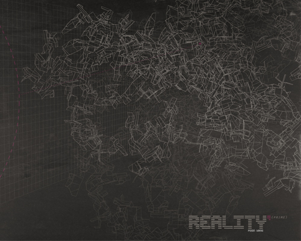
Posin Wang
Thesis Title
My project will attempt to challenge architectures capacity to organize existence in an unfamiliar territory, in hopes of opening unexpected episodes, stories, and conversations. The use of artificial gravity to portray a new directionless perspective that initiates new modes of human and cultural interactions. By merging radical yet seemingly familiar elements, there exists an opportunity to propose a new physical law that transforms any surface into occupiable space. This condition blurs the boundaries between space and time imbuing space with temporal qualities and time with spatial experiences.
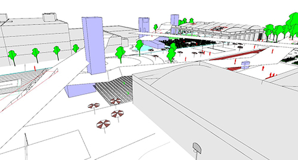
Mitchell Lorberau
Thesis Title
lol wut wut wut
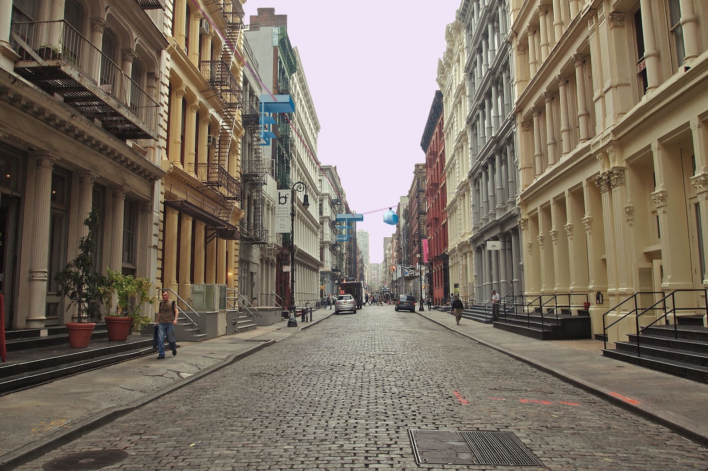
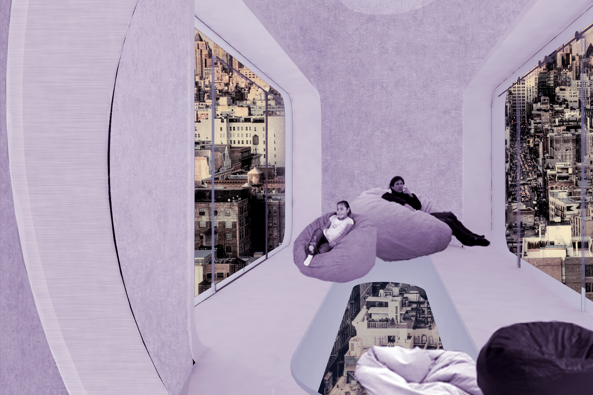
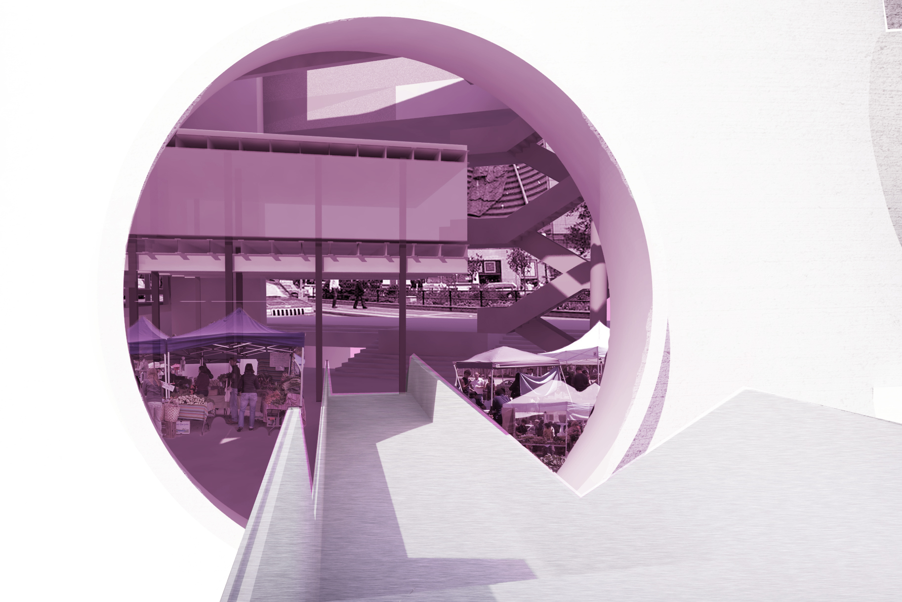
Kristin Akin-Zimmerman
Thesis Title
New York City is fast and efficient: the city’s pulse feeds on caffeine, phones, and stories from that one obscure place in that one neighborhood with that one woman you never want to see again. These destinations define our leisure, work, and errands, but except for cases like the High-Line, shopping avenues, or walking parks, it is rare to wander without a destination. Although destination spaces and events are valued for their uniqueness, the uniqueness of the in-between is often ignored.
Jane Jacobs spoke of the sidewalk is a place of vibrancy and event, but its limited by gridded street paths, uninvited facades, and inactivated public space. The slowness of walking is rendered obsolete by the implementation of transportation systems: busses, metros, cars, trains. These modulated places are fast and uninviting — a detached experience. Some are underground, furthering the disconnect between event and movement. Transportation systems epitomize efficiency, detachment from current space, and modulated experience.
This thesis contests this form of movement through the city. It is not intended to discount the need for efficient movement, nor is it intended to replace it. Rather, its goal is to provide a richer alternative—one in which experience, engagement, and awareness of the idiosyncratic life of the city is prioritized over efficient movement through it. It focuses on the journey between events known or (hopefully) unknown. It stitches public space into the urban fabric by connecting elevated spaces, left-over lots, ignored voids, and unwanted real estate. It is a real-life, real-time Stumbleupon for unexplored oddities sought after.
The network is an informal system based on the needs, funds, and stubbornness of locals. It aspires to be continuous, but will probably (hopefully) be intermittent because of funding and diverse user interests. All the better though, now people must get out to discover the area around dead-end stations. These stations do not respect their physical context much; their care goes towards housing happenings. They are hyperactive community centers for their local users: a packing room for girl scout cookies, a practice room for a new band, and a pop-up beer garden, all on a Wednesday. A station in the Upper East Side is much different than one in the Business District or Chinatown. Though subconsciously “owned” by adjacent users, interaction and temporary ownership is attained by the wondering tram user, excited by the prospects of playing racquetball or learning lion dancing.

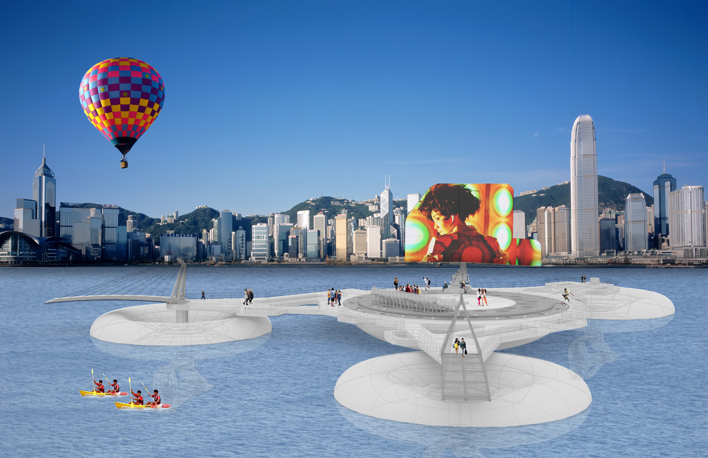
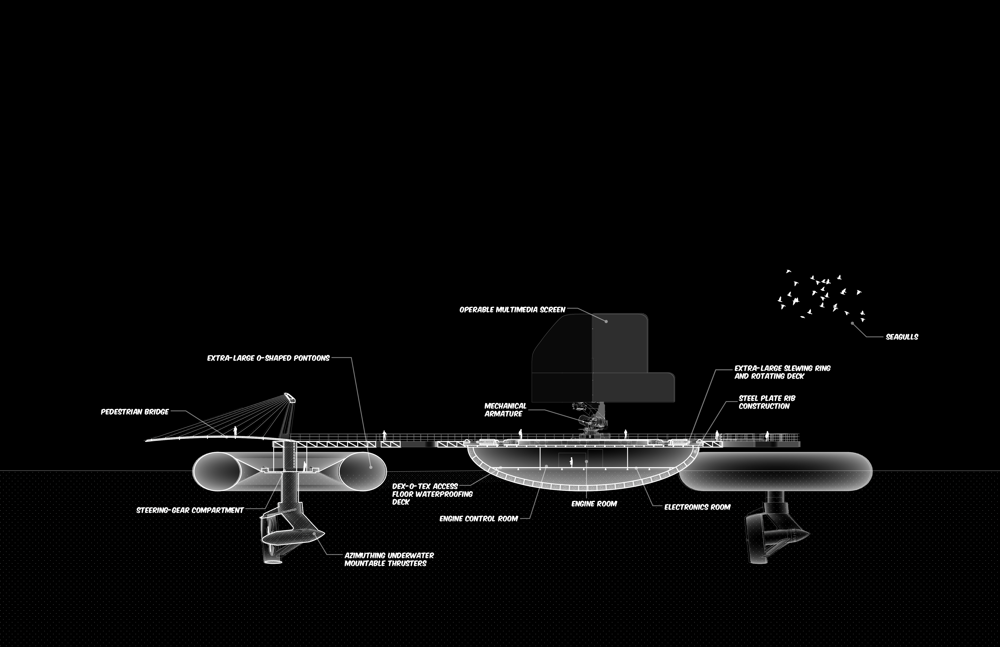
Stephany Phung
Thesis Title
Float! is a network of urban instruments, not only intended as an architecture of moving parts but also of a flexible system that offers built-in adaptability to new uses. Strategically designed for Hong Kong's Victoria Harbour, the network activates the harborfront by reintroducing emergent qualities into the predefined structure. The urban instruments are programmatically different in nature ranging from adaptive open space, multi-modal transportation hub, new chinatown cultural center, harbor bath, and marine research facilities, to live-work environments. Float! makes way for a city-wide infrastructure that fosters latent cultural conditions and new experiences.
Spencer Bittner
Thesis Title
Living is an individual endeavor. It composes itself from a collection of moments. Moments stripped from consciousness. Moments of internal soliloquy. They formulate and ripen in the breadth of the everyday; they linger or they fade. Their meanings can be provocative or dismal. Environments are where these potentially rich occurrences seed. Environments within, without architecture, maintain an affective quality upon moments. The everyday is posited as revealing and poignant.
on cinema. [a scripted reality]
The lens and the microphone are the tools of the film-maker. They witness the scene in our absence and through such engender a specific atmosphere, meaning, and expression. Film holds the ability to infiltrate our minds and senses, ultimately inducing our empathy for the moments and people it portrays. The true capturer of moments.
on literature. [a true fiction]
Prose is the only tool of the writer. Prose spews tone, character, place, drama, nuance, depth. Through its methods it poses to move us, to infatuate us in its meaning, to provoke its dissection.
on architecture. [an everyday reality]
Architecture exists in the everyday world, not the cinematic world, not the literary one. The everyday is unscripted, present, and ran- dom. If the lens is the media of film, prose of literature, then architecture is suitably a purveyor of everyday life. Space is the lens through which daily lives are led. This architectural lens (space) can deem moments increasingly provocative and illustrative.
These disciplines have woven themselves into the crux of this thesis; a thesis concerned definitively with everyday life and the moments it holds. Certain moments, real or fictitious, have the ability to move us, to issue profound memories, to be unequivocally meaningful. These moments, this living, are what develop individual selves; the lives we lead. Whether routine or spontaneous, mundane or sensational, all moments are susceptible to a hollow ignorance or a deep interest and care. Architecture maintains a slew of potentials for a heightened interest, meaning, and consciousness of everyday moments. Through various techniques this thesis is directed to produce exceedingly profound and meaningful moments within the everyday; to induce a sort of consciousness of its subtleties and dramas.
At 325 Grand. Lower East Side. NY. NY, a new building proposal aims to engender these evocations, these new consciousnesses; to make everyday life more palpable.
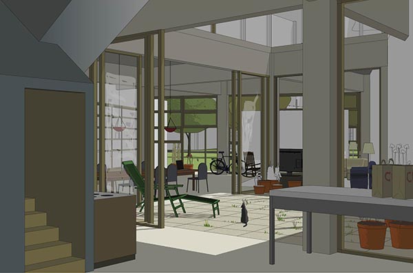
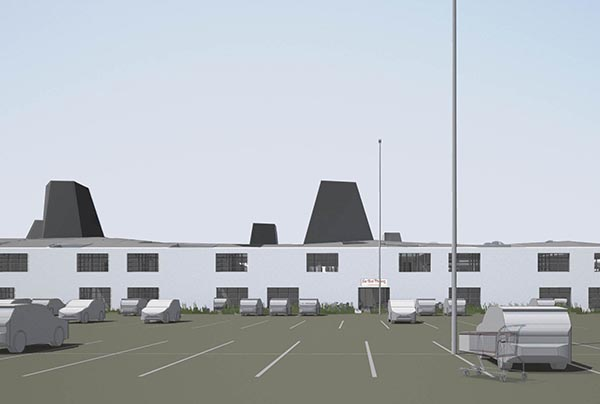
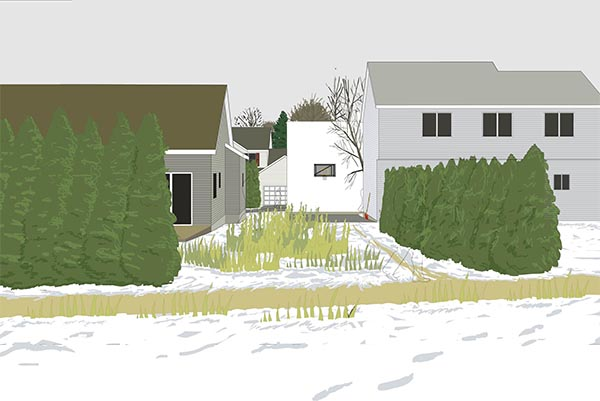
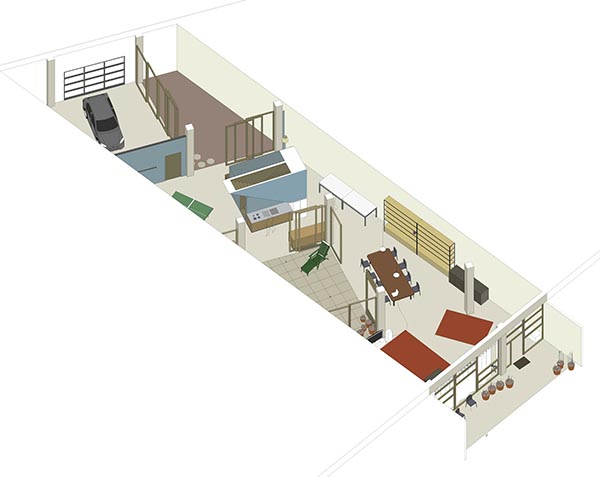
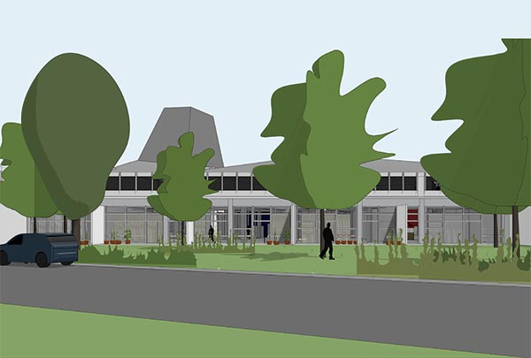
Blair Ekleberry
Thesis Title
text nonexistent atm
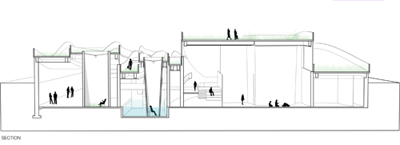
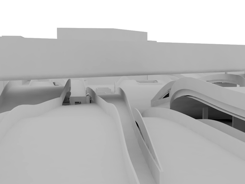
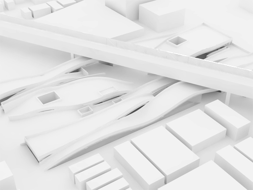
Katerina Leung
Thesis Title
My thesis concerns architectures typical role as an expression of ideological hierarchy. Architecture often addresses the dominant culture of a society while being less successful at addressing minorities. Architecture monumentalizes a single idea rather than a mixed or multiplicity of ideas. When its formal or spatial elements are foreign and exclusive towards minorities, it creates a barrier between individuals from both groups. Instead of emphasizing the differences between groups, architecture has the opportunity to create space that is inclusive and can foster an ideological exchange when individuals of different beliefs interact.
Religious and civic architecture are prime examples where form and space magnifies the ideas of a dominant culture over another. This project investigates how space can be created where two equally dominant ideologies collide with each other. Islam and Christianity are two rooted beliefs that have been the basis of conflict over centuries; therefore a religious space is proposed as a testing ground for how architectural form and space can encourage social interaction between believers of both religions. In the design of this project, architectural strategies such as creating smaller intimate spaces, defamiliarization in space and conflict amongst space will be used to foster social interaction among people.
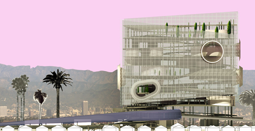
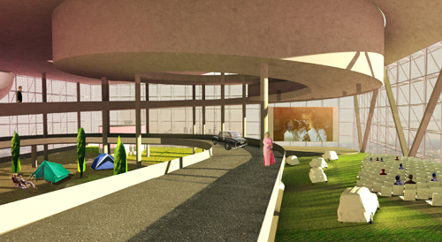

Marki Becker
Thesis Title
It has been a long time since we could call the way we build, plan and live in cities exciting or spontaneous. The type of city we used to occupy was a collage where there were FUZZY edges and questionable OVERLAPS. This fuzziness allowed spontaneity, randomness and indeterminacy to become commonplace situations that helped to create vibrant, interesting and communal lifestyle.
Due to adoption of rationalization in our ideas of city planning however, there are now clear cut differences between program types, all woven together by a transportation network that became possible with the advent of personal transportation. We move between destinations, never encouraged to deviate or occupy places where indeterminacy is of paramount importance. Because of this, we are stuck with a boring, single-track everyday lifestyle.
The physical presence of architecture to has the potential to reintroduce high density sectors of everyday life, subsequently re-invigorating the way we move through the everyday. Since the freeway is both the product and enabler of our current segregation, it serves as the perfect instrastucture to begin introducing crossroads of high density between the freeway and the neighborhood community. It is the largest public place with the most amount of exposure in an entire cityscape and currently lacks any sort of localized personality. This thesis plays with the relationship between the local + the commuter, the freeway + the neighborhood, and enclosed program + indeterminate landscapes and the idea of iconography in the Los Angeles landscape.
This thesis project is located in Los Angeles, CA, a place where car culture is a community icon. The building is a proposal for a new type of public space that is located like a parasite on the Santa Monica Freeway. This location seeks to give character and place to the otherwise non-spaceness of the freeway, provide a positive addition to the existing community and promote interaction between the strangers that occupy the freeway and the locals that have been affected by the bisecting nature of the freeway. It is important to note that this building is a prototype, an idea that would hopefully propagate to give place and community to the freeway and the surrounding neighborhood it occupies.
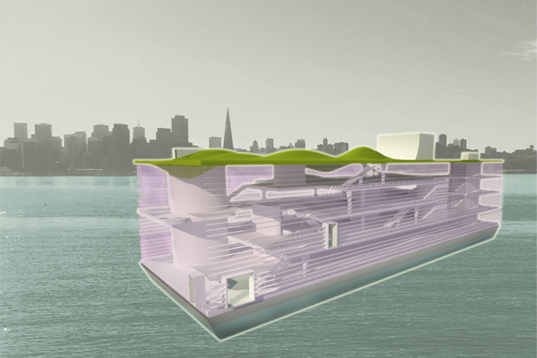
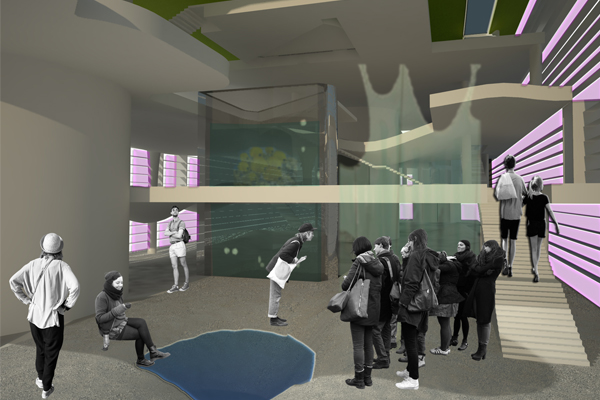
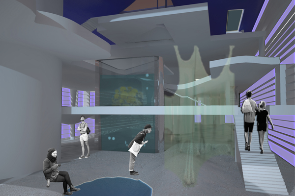
Gabby Cuero
Thesis Title
In contemporary society, many people are disenchanted with physical space. It has therefore become socially acceptable to augment our personal space and experience with virtual content. this augmentation or virtualization of space occurs in spite of the physical context, and often clouds the experience of that context. At present, architectural space is not virtualizable.
Virtual experiences are attractive because they provide the feeling of being in a network, unpredictability, unique sense of control over social and spatial relationships, and offer a platform for creative thought.
As experts in the design of physical space, architects have the responsibility to consider how architecture could complement the experience of augmented reality by providing physical spaces that can be virtualized. this can be achieved by the incorporation of architectural techniques that promote control and customization of social and spatial relationships.
This thesis project focuses on embodying virtual spaceís changeable nature that gives people the opportunity to be more creative and act as co-authors of physical space. the hope is to foster environments that require exploration and allow users to critically reconsider reality.
Given the evolving role that museums play within contemporary culture- one that has transformed from the passive display of collected content to the catalyzer of new and valuable cultural experiences, this thesis project is being developed as a museum of contemporary sculptural and installation art- one that includes residential spaces for artists-in-residences. this museum, which is comprised of three connected floating structures, allows both the resident artists, the museum curators, and the visitors a variety of modes by which to redefine its spatial and organizational qualities.
Architecturally, this project is executed by collapsing program and circulation spaces and creating a field condition in which there is an illegible and ambiguous combination of elements and spatial relationships.
Artists and users are able to make the museum spaces different through a system of spatial redefinition. like in virtual spaces, they are given control over space and environments.
New relationships are created at a macro level through floating units, and at a micro level in galleries. gallery structure allows for deconstruction and ad hoc organization. in addition, non-hierarchical circulation creates new experiential sequences.
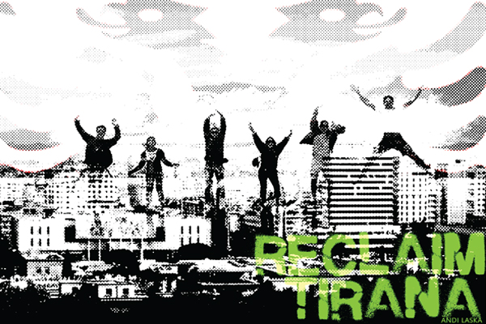
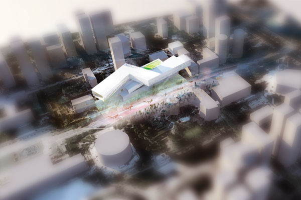
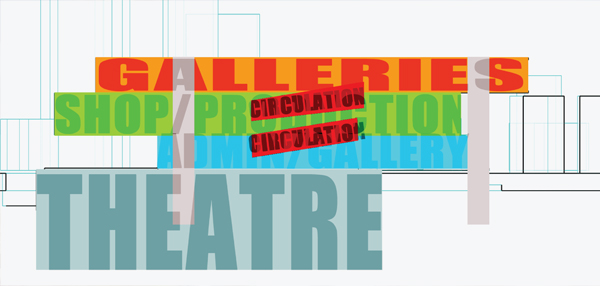
Andi Laska
Thesis Title
In a country that lacks cultural habits of appropriation, architecture can act as a powerful tool by offering techniques that afford individuals the opportunity to practice acts of spatial appropriation. Located in tirana, Albania this thesis proposes an architecture that promotes democratic participation by introducing spaces where the people can participate in collective, creative activities that offer spontaneity and fun, as well as spark new social and spatial experiences.
Democratic cultural hub for arts, spontaneity and fun. Playground for creative space making. This project simply provides a framework with a free-flowing program that allows the users the freedom to spontaneously affect space and be affected by it. Adopting the concept of playing blocks, the program is introduced in hovering bars that contain a variety of spatial modifiers where the users can find themselves interacting with art and gallery spaces, enjoying a show, or simply spontaneously stopping and playing in the circulation spaces.
WHAT
EVERYTHING is an exhibition featuring the undergraduate thesis work of Jackson Studio. The projects each have a unique focus, but all are united in their ambition to re-frame the physical world as a place of augmented experience, in accord with aspects of contemporary culture that the architectural discipline has so far failed to adequately address.
Each thesis is therefore framed as a challenge to existing practices, and an argument for and demonstration of a new approach to architecture.
WHY
The studio's general interest in architecture's nature as an immersive, augmented reality is reflected in the design of the exhibition itself: the content of each thesis project is presented as a series of interactive layers, and the physical infrastructure of the show provides the interface for exploring and interacting with these various layers of content.